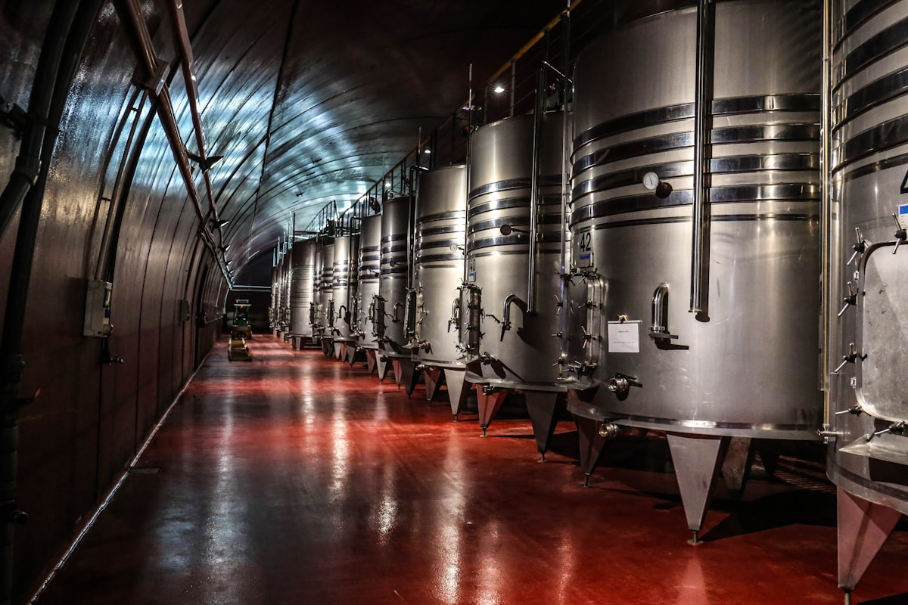

Organic & Biodynamic
Farmed without synthetic fertilizers, pesticides, or systemic herbicides, nurturing biodiversity, beneficial insects, and balanced vineyard ecosystems.
Natural wine is not a trend; it is the original, time-honored way of making wine. We champion independent growers who reject chemicals in the vineyard and industrial additives in the cellar, allowing the authentic voice of soil and vintage to shine.

What makes every bottle on our shelves distinct, ethical, and delicious.
Farmed without synthetic fertilizers, pesticides, or systemic herbicides, nurturing biodiversity, beneficial insects, and balanced vineyard ecosystems.
Fermentations occur spontaneously via native yeasts present on grape skins and in the cellar air, producing complex, layered aromatic profiles.
Bottled without artificial colorants, commercial flavor powders, mega-purple, or heavy sulfiting agents. What you taste is 100% pure grape juice.